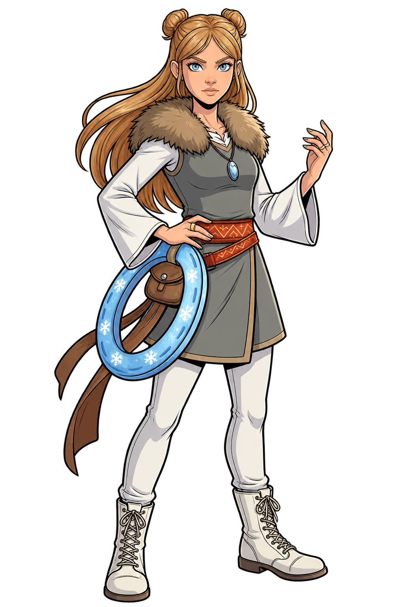
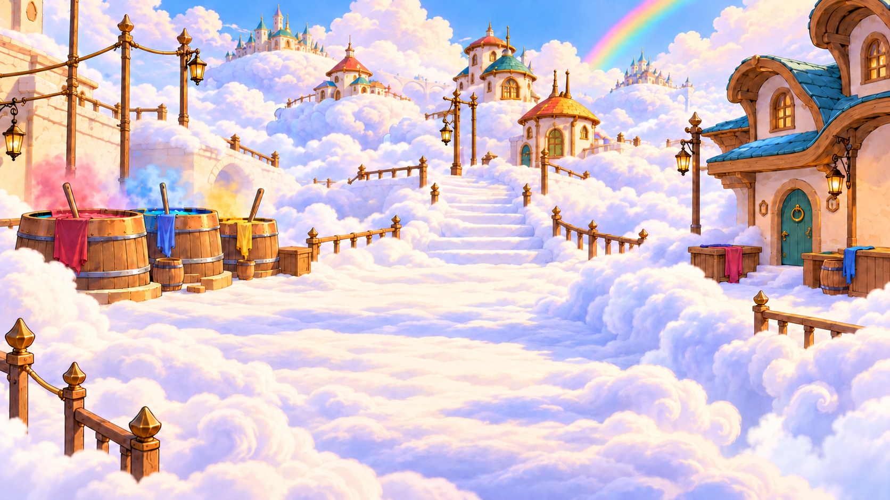

KAPITEL I
Farbenquell
Wo die Farben des Himmels entstehenDEIN NÄCHSTER SCHRITT
Die 3 Kristallelfen
FINAS GESCHICHTE BEGINNTHoch über den Wolken wartet eine Welt voller Magie, Freundschaft und Geheimnisse. Begleite Fina auf ihrem Weg zu den Kristallelfen.
Mit Maus oder Pfeiltasten spielen
01 Abschied aus Farbenquell

Die 3 Kristallelfen
Farbenquell · Hier beginnt Finas Reise
KAPITEL 1
Der Originalsoundtrack begleitet dieses Kapitelbild.
Die Musik darf ausspielen. Du bestimmst, wann es weitergeht.EINE SEPARATE KAMPFPROBE
Der versperrte Wolkenweg
Öffnet das Tor und entkommt der Wasserwache.
AUFMERKSAMKEIT DER WACHE
ZUG 1
Dein Zug. Du hast Zeit zum Überlegen.
Wähle eine Heldin und ihre Fähigkeit – oder klicke auf die Umgebung.